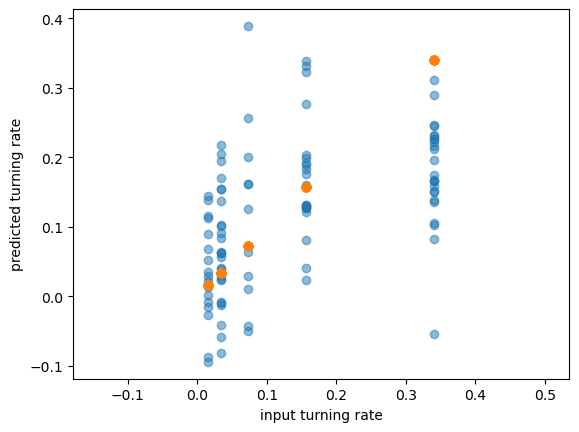
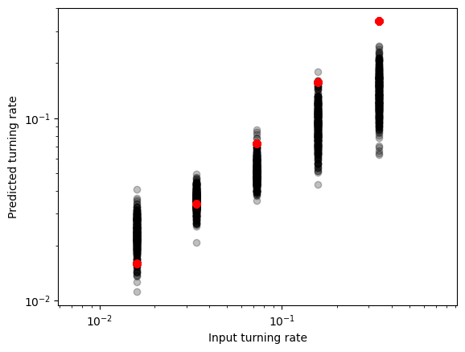
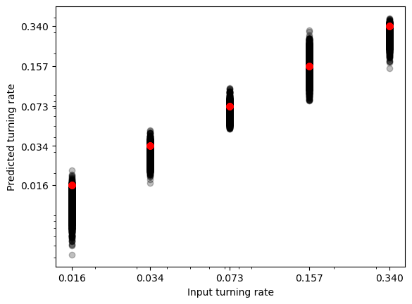
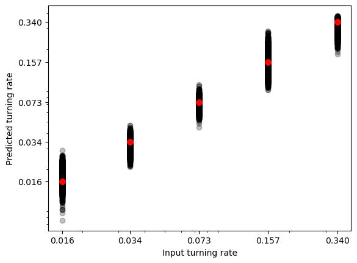

Weeks 13-15
0. Table of Contents
- Introduction
- Cluster Convergence
- Machine Learning
- Convolutional Neural Networks (CNNs)
- Dataset Rolling
- Preliminary CNN Experiment
- CNN Layers
- Preliminary CNN Tests on Rolled Data
- Training and Predicting on Mixed Densities
- Current Problems
- Misc Notes
1. Introduction
The main purpose of this week is to begin machine learning tests. The secondary purpose is to flesh out some details a
2. Cluster Convergence
Our cluster analysis code currently outputs various clusters organised by their sizes. In practice, we have analysed them by plotting their distributions within a snapshot using histograms (see, for example, Weeks 5-6 Cluster Analysis).
The initial thought was to maintain the bin distributions and chart how each individual bin varies over time. This would essentially involve a ‘rolling average’, where the bin values of iteration \(n\) would be compared with the average of the previous \(k\) iterations for every bin. This would mean a constant account of standard deviations for moving averages, and setting an acceptable threshold beyond which the system can be considered to stabilise. This is obviously complicated - firstly, the histogram bins will not always be constant; there are bins which will have zero clusters, or which will fluctuate even within the steady state regime by virtue of clusters slightly evaporating (past a bin threshold) and then growing back. This is also quite difficult to visualise.
Instead, the simpler method is to plot the mean of these cluster sizes (weighted by virtue of their categorisation into clusters) and chart how this mean evolves in time. The principle of monitoring stabilisation is the same, but it can be done much simply and visually through a two-dimensional image.
3. Machine Learning
With tools of analysis developed over the past 12 weeks (and the last few able to be fleshed out in the following weeks), we can move into the machine learning part of the project. This section has some general details about machine learning as a whole and the CNN we are using.
The principle of layered machine learning is that of receiving an input vector of datapoints (a ‘layer’ of ‘neurons’) which is fitted with a weight matrix and callibrated with a bias in order to generate successive learning layers; the whole process is given an ‘activation function’, which alters the results after a desired rule (which will be explained below). These weights are trained on the input data in order to correspond to some desired output data, with the intent of generalising this process to work on extended environments and cases. A useful way to express this in linear algebraic notation is:
\[ \overrightarrow{a}^{(n+1)}=\sigma(\textbf{W}\overrightarrow{a}^{(n)}+\overrightarrow{b}) \] where we take \(\overrightarrow{a}^{(n)}\) to be the n layer of neurons, \(\textbf{W}\) to be the weight matrix, \(\overrightarrow{b}\) to the associated bias vector, and \(\sigma\) to be the activation function. The weight matrix \(\textbf{W}\) applies different weights to every neuron of the previous layer for each neuron of the current layer.
The activation function \(\sigma\) is a function which is meant to bind the neuron values within certain restrictions. A common function, for instance, is the sigmoid function, which binds neurons between 0 and 1, flattening very high values in both negative and positive directions towards the former and the latter, respectively. It is illustrated below:
\[ \sigma_{sigmoid}=\frac{1}{1+e^{-a}} \]
The reasoning behind the sigmoid function is to treat neurons on a continuous gradient between fully activated (1) and fully deactivated (0), in loose analogy with biological neurological systems. The problem with the sigmoid function is precisely the flattening behaviour it displays at high values - a big part of the machine learning process (precisely the ‘learning’ aspect) is the adjustment of weights with the purposes of minimising the cost of deviation from the expected values (which will also be explained below). High weight values will not produce meaningful values which can then be fine-tuned by the system, so the fluctuations in learning improve much less in practice, especially with a lot of inputs and layers involved.
What is often opted for instead, which is the activation function we are using in this project as well, is the Rectified Linear Unit (ReLU) function \(\sigma_{ReLU}\); this function sets any negative number to 0, and any positive number to its own value. Under this function, varying the weights will always yield some feedback, i.e. learning, on how the algorithm can improve to better match expectations.
How does a machine learning algorithm figure out how to alter its weights? The brief answer is through an analysis of deviation, or cost. The machine is fed training data alongside the expected values, and it generates predicted values in turn based on the final layer of neurons. The algorithm obtains a cost function by summing the squares of differences between the expected output value of a neuron and its actual value. Not only does this function convey how well an algorithm performs on its training data (the bigger the value of the cost function is, the worse the algorithm is), but its principle can be used to compute a cost gradient - essentially, the algorithm can compute a cost function vector across all its weights and biases (which constitute its ‘dimensions’, in a calculus sense) and then take the gradient to determine how much each weight/bias parameter ought to change.
4. Convolutional Neural Networks (CNNs)
For our purposes, running a machine learning algorithm for 128x128 lattice sites will get very resource-intensive very quickly. The input layer alone requires more than 16000 neurons, and subsequent layers will require an extremely high number of weights to compile into new neurons, as, per the equation above, each new neuron \(a_k^{(n)}\) will depend on all previous neurons \(\overrightarrow{a}^{(n-1)}\). This results in poor scaling with increases in image size.
For this reason, alongside considerations of accuracy, this project employs a convolutional neural network. From hereon I will be denoting the number of a layer with \(l\). The main difference in principle is that the main successive layer within the network is a convolutional layer, wherein each neuron at layer \(l\) is only connected to a given neighbourhood of neurons in layer \(l-1\) through a kernel/filter (the entity analogous to the aforementioned weight matrix \(\textbf{W}\)). This kernel ‘moves’ across the input map in strides, generating one neuron value by adding the sum of its respective weights.
In broad strokes, the weight function of a standard machine learning algorithm applies holistically to the entire previous layer map, whereas the kernel of a convolutional neural network applies locally to a region of the previous layer map. Both are subsequently subjected to an activation function before yielding a neuronal value.
The consequence of a moving kernel is that the (output) feature map of a convolutional layer will be smaller than the input map it analyses. Using many convolutional layers would therefore mean that the edges of the input map would be factored considerably less in the learning algorithm compared to the centre. The feature maps would get smaller and smaller - crucially, the more layers there are, the more focus is shifted towards the central part of the initial map.
One approach is to introduce padding. Essentially, padding constitutes inserting values at the edges of the output feature map in order to increase its overall size. In most cases, the aim is to preserve the size of the input map across convolution, and the edges are padded with zeroes (“zero-padding”). Note that the amount of padding \(P\) must align with a relational formula of the different sizes of the system in order to be able to construct a valid convolutional layer:
\[ \frac{V_{i} - F + 2P}{S}-1 \in \mathbb{Z} \] where \(V_i\) is the input volume size (for square images), F is the receptive field size, and S is the stride.
The receptive field size, in turn, can be calculated generally using the following formula (taken from Araujo et al, 2019):
\[ F_0 = \sum_{l=1}^{L}((k_l-1)\prod_{i=1}^{l-1}s_i)+1 \] where \(k_l\) is the kernel size of layer \(l\), \(s_l\) is the stride size of layer \(l\), and \(L\) is the final layer of the system.
Or recursively using the following formula:
\[ F_{l-1} = S_lF_l + (k_l-s_l) \]
Finally, the amount of kernels determines the depth of a feature map. Essentially, we can picture each kernel as generating a two-dimensional grid, which can be stacked along the z-axis (the depth-axis, in other words). This is important in order to preserve the depth of the original input map, pertinently stored in our case in colour, through an RGB depth of 3. Therefore, for all CNN algorithms which make use of particle orientation in our PEP system, we will need three filters in our convolutional layers.
5. Dataset Rolling
One key trait of the in-house code has been a ‘rolling’ of the dataset. Essentially, once the iteration of a dataset is generated by the sampler.py function, it is stored under the header conf_{iteration}. This iteration is then ‘rolled’ (using the np.roll function) 12 times along the x-axis, essentially creating new datasets from the same generative process. So far, we have not been making use of this in-house code property in our data at all - this was intended specifically for the machine learning part of the project, so it was not brought up in our analysis (which was strictly focused on the non-rolled datasets). For reference, the rolled datasets are stored within the h5py file as conf_{iteration}_{roll}.
But this brings up an interesting point now that we are moving into the machine learning parts. The CNN will be training on all available datasets in order to draw its inferences. To what extent is introducing rolling data favourable to our predictions? On one hand, training the model on recycled data may give it a weighing bias towards the specific conditions of the datasets we present it with. There is the worry of overfitting, or overspecialisation to strictly the circumstances (\(P_t\), \(\rho\) and \((N_x,N_y)\) combinations) it receives as input. On the other hand, the rolling provides more samples on which the CNN can train, with a much smaller computational cost. The end of this experiment involves large scale data manipulation and generation, and if rolling proves to be a reliable tool to train a model on, it will aid immensely in the generation aspect.
On this note, I have done some quick analysis on the data. As a rule of thumb, datasets with rolling take approximately 10 extra seconds to generate in comparison to the strictly unrolled datasets. This has been tested on my personal computer - it is possible the time difference is much smaller once a supercomputer is employed.
The file size contrast is considerable. Datasets which have surplus rolled iterations have approximately 284MB each. Datasets which do not only have about 66MB. Since all the files have been stored on my computer, this is considerable insofar as so far around 215MB per dataset have gone unused (though they will now be employed by the CNN). For example, to obtain the biggest cluster size distribution in Weeks 9-12 required 100 different datasets, resulting in about 19GB of data that was not called.
Data analysis aside, we will run the CNN using both options, and contrast the results for different scenarios. I have rewritten sampler.py to accommodate the requirements of unrolled dataset files (as sampler_no_roll.py). This code stores its datasets in a separate folder (data/no-roll).
6. Preliminary CNN Experiment
We can start with a simple case to illustrate the principle. Taking a single density value of \(\rho=0.15\), we can train the model on a few probability distributions. Running for 5 epochs and using only one convolutional layer, with 3 5x5 kernels with 3x3 strides, we get the following predictions:

where the orange data points are the input turning rates, and the blue data points are the model predicitons.
The spreads are quite big on most probability values, and for the highest one the model is clearly not fitting properly at all. Nontheless, this is a good start for how simple the layer diagram is:
INPUT => CONV => FLATTEN => FC (optimiser: adam ; 5 epochs)
After some experimenting, below are the predictions made on the unrolled data, running for 10 epochs:

With the following layer diagram:
INPUT => CONV => BN => CONV => BN => MAXPOOL => CONV => BN => CONV => BN => MAXPOOL => FC => DO => FC => FLATTEN => FC (optimiser: adam ; 10 epochs)
The training size is also important; this model is trained on one dataset for each probability distribution (so 5 datasets total). Each of these datasets has 1000 snapshots, leaving a total of 5000 data. We trained the model on 3000 snapshots, and then applied it to the last 2000.
The natural question is how the predictions change if we train on longer evolutions. Below is the graphical result of this, with the same (\(\rho\),\(P_t\),(\(N_x\),\(N_y\))) configuration, but with 10 times the generated evolution steps (and therefore snapshots). This means the mode is now trained on 30000 snapshots, and then applied to the last 20000.

We can see the fitting drastically improve for the higher tumbling rates, though it’s clearly still lacking at the extremes of our turning rates.
To understand the general principle and methodology of our preliminary analysis, see the uploaded Preliminary Analysis Notebook example.
7. CNN Layers
Quick definitional list for the most commonly used CNN layers.
Convolutional Layer (CONV): Standard convolution layer, mapping the input map through kernels in strides, and generating a feature map of lower dimensionality as a result.
Activation Function Layer (RELU): Applies the activation function to the emergent neurons. Often left implicit after a CONV or FC layer.
Batch Normalisation Layer (BN): Normalises layer inputs through re-centring and re-scaling.
Pooling Layer (POOL): Separates input into patches; replaces each patch in input with single value in output, which is often either…
MAXPOOL: the maximum value within the pool
AVGPOOL: the average value within the pool
Dense/Fully Connected Layer (FC): Standard neural network layer; maps each neuron of the feature map to every neuron of the input map.
Dropout Layer (DO): Nullifies contribution of some neurons towards next layer while keeping the rest intact.
Flattening Layer (FLATTEN): Flattens feature map into a one-dimensional column.
8. Preliminary CNN Tests on Rolled Data
So far we have trained the model strictly on non-rolled datasets. Below is an example of the same 1000 iteration per dataset scenario, but used on rolled datasets to facilitate more samples for the model to train on. As a result, there are 70000 samples in the dataset, 50000 of which are training data, and 20000 of which are validation data.

We can see that the fitting is even better in the low iteration rolling case than in the high iteration no-rolling case. However, the \(P_t=0.34\) values are consistently predicted incorrectly across these two examples, which might suggest an underlying problem with the system.
9. Training and Predicting on Mixed Densities
The next evident question is how the model holds up when we apply the above principles to a broad range of densities. In the figure below, the CNN runs the same framework on 100 different densities. Unfortunately, I have not been able to construct predictions for such a model yet, as the CUDA memory storage overwhelms my current machine and crashes. As a result, this will be done once the supercomputer system is fully set up.
10. Current Problems
We are currently training on every snapshot of a lattice’s evolution. This means that our model trains on both steady state and non-steady state segments of a system. In the following weeks it will be worth separating these segments for the purposes of analysing how training the CNN system only on steady state postively or negatively affects its ability to derive tumbling rates.
11. Misc Notes
J. Chodera - Equilibration in Monte Carlo and molecular dynamics